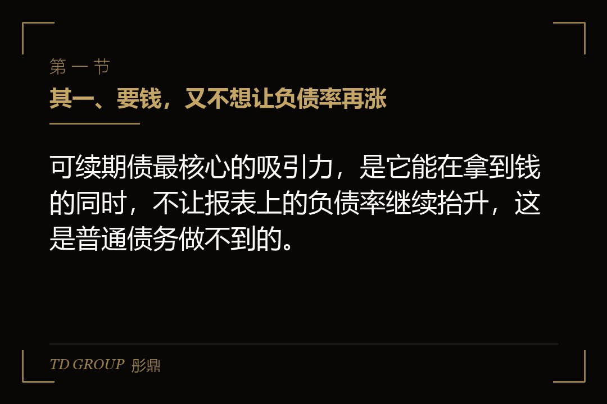
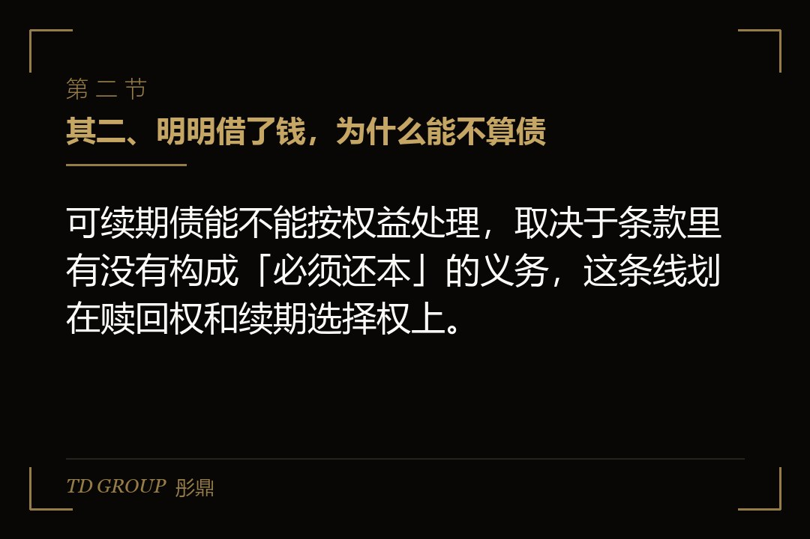
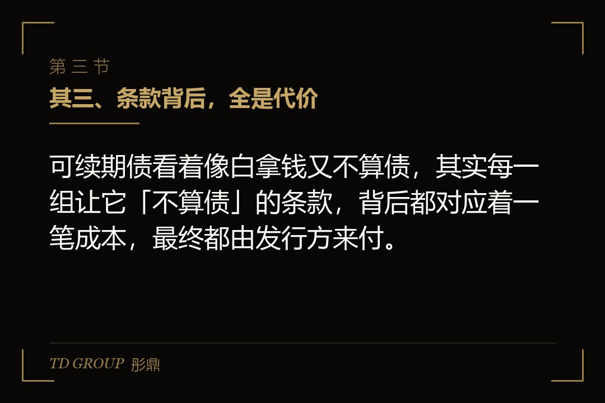

其一、要钱，又不想让负债率再涨

结论先行：可续期债最核心的吸引力，是它能在拿到钱的同时，不让报表上的负债率继续抬升，这是普通债务做不到的。
假设有家企业，负债率已经到了一个让投资人、银行都皱眉的位置，可它偏偏还有一笔扩张要投钱。去银行借普通贷款，负债率会更高；发普通债券，也一样记在负债里。它想要的是那笔钱，又不想要负债率往上走。
可续期债就是冲着这个矛盾来的。它名义上是债，企业向投资者借钱、定期付利息，但因为条款上写的是「企业可以一直往后延，不一定要还本」，在会计上它可能不被当成一笔必须还的债，而是被计入权益。
这样一来，同样一笔钱，走普通贷款会让负债率升高，走可续期债却可能让报表好看很多。对很多负债率偏高的企业来说，这个区别本身就是它愿意为可续期债多付一点成本的理由。
其二、明明借了钱，为什么能不算债

结论先行：可续期债能不能按权益处理，取决于条款里有没有构成「必须还本」的义务，这条线划在赎回权和续期选择权上。
关键在于一个会计上的判断：如果一笔钱，发行方有义务在某个时点还，那就是债；如果发行方没有还本的义务，能一直往后延，那就更接近权益。可续期债的设计，就是把「必须还本」这个义务去掉。
这里要先说清一个常识：债和权益在报表上的分界，看的不是钱的名义，而是「有没有还的义务」。普通债券写死了到期日，到期不还就是违约，所以它必须记在负债里；可续期债把到期日拿走，换成发行方自己的续期选择权，没有义务就一定还，这才有了向权益靠拢的空间。正是这一点微妙的差别，撑起了可续期债最核心的价值。
怎么去掉？靠几组条款。其一是续期选择权，到期时发行方有权选择继续往后延，而不是必须还；其二是赎回权，赎回与否由发行方说了算，而不是投资者可以强制要求还本；其三是利息支付条款，某些设计下利息也可以递延。
当这些条款都站在发行方这一边、不构成对外部的还本付息义务时，这笔钱在报表上就更接近权益。但这并不是一刀切的，能不能按权益处理，要看具体条款怎么设计、还要过会计准则的层层判断。
其三、条款背后，全是代价

结论先行：可续期债看着像白拿钱又不算债，其实每一组让它「不算债」的条款，背后都对应着一笔成本，最终都由发行方来付。
先看利率。可续期债通常比同期限的普通债券要贵，因为它让投资者承担了「不知道什么时候能拿回本金」的风险，投资者要一个更高的利息来补偿。
这个「更贵」不是一个抽象的说法，而是有具体落点的。同样期限、同样信用等级，可续期债的票面利率往往要高出普通债券一截，高出的这部分，就是投资者为「可能永远拿不回本金」这个不确定性开的价。对企业来说，这多出来的一截，就是它换取「报表好看」这一格数字要付的代价。
再看利率跳升。很多可续期债设计了一个机制：到了某个时点如果发行方还不赎回，利率会自动跳升一档，用越来越高的利息，逼着发行方尽早赎回。这个跳升机制，其实是在替投资者把「无限期」这个风险，一点点收回到发行方身上。
还有利息递延。有些可续期债允许发行方递延支付利息，但递延往往伴随着限制条款，比如递延期间不能分红。企业省下的当期现金，可能换来的是更重的长期负担。
这里有一个容易被忽略的细节：利息递延听起来是「暂时不用付」，实际上常常绑着代价。最常见的一条，是递延期间发行方不能给股东分红。也就是说，你今天不付给债主利息，明天就不能给股东发钱，两边其实是被同一条绳子拴着的。省下的是当期的现金支出，让出去的是未来分红的自由，这笔账要放到一起看。
所以可续期债不是免费的午餐，它是拿更高的成本、更复杂的条款，换一个好看的报表。这笔账，签之前要算得清清楚楚。
说到底，企业是用「多付的利息」和「让出去的一部分确定性」，去交换报表上负债率的那一格数字。这个交换值不值，取决于企业到底有多需要那张好看的报表，以及它愿不愿意为这个数字持续买单。很多企业签的时候只看中了权益那一栏，等利息一年年付下去，才发现当初换来的，是一笔既贵又甩不掉的长期承诺。
其四、想认权益，条款得先过关
结论先行：可续期债能不能按权益处理，是条款设计出来的，不是想认就认，几组条款稍有闪失，它就老老实实回到负债那一栏。
这里最典型的坑，是利率跳升设计得太陡。如果跳升机制让发行方在某个时点「几乎不可能不赎回」，那在会计上就可能被认定成发行方其实有还本的实质义务，于是这笔钱又得按负债来记。设计初衷是想用跳升逼自己早点赎回，结果反而把权益属性给弄丢了。
另一个坑是续期选择权的真实性。如果条款里写着发行方可以续期，但同时又有一堆条件让续期形同虚设，那这个选择权就不真实，会计上照样按负债处理。
所以可续期债的条款，是债与权益之间的一根钢丝。设计得巧，能稳稳落在权益这边；设计得糙，就掉回负债那边。企业签之前，要请懂的人把每一条都过一遍，确认它真的能达成想要的报表效果，而不是凭一句「这是永续债」就认定它算权益。
其五、投资者那一边，也在盘算
结论先行：可续期债的投资者不是傻子，他们接受了「可能永远拿不回本金」这件事，就会在利率、跳升和赎回权上把风险要回来，企业要看清自己的对手在算哪笔账。
站在投资者角度，买可续期债，等于把钱借出去，却可能永远等不到还本。所以他们会要求更高的票面利率，会坚持利率跳升机制，会盯着发行方的信用变化。一旦发行方经营转差，他们会要求更狠的条款保护自己。
这带来一个有意思的局面：可续期债的发行方，往往是在负债率已经偏高、普通融资渠道变贵的时候才想到用它。而负债率偏高，恰恰是投资者最担心的时候。于是发行方越需要用可续期债，投资者越要更高的价，双方在一个不太有利的位置上博弈。
这也解释了为什么可续期债经常出现在一个略显尴尬的时点：企业真正健康、融资容易的时候，根本不需要拿这么贵的工具去换报表；等到它需要了，往往已经是融资环境变紧、议价能力变弱的时候。时机越被动，条款谈得越吃亏，这是可续期债这门生意里最需要警惕的一条规律。
看清这一点，企业就该明白：可续期债不是负债率偏高时的万能药，它只是把融资的成本和风险，用另一种更复杂的方式重新定价了。
其六、动手之前，先想清四件事
结论先行：要不要用可续期债，先把报表效果能不能达成、成本扛不扛得住、条款会不会踩坑、后续赎回有没有安排这四件事想清，比急着发债更重要。
其一，想清报表效果。这笔债到底能不能按权益处理，条款设计到位没有，先请会计师把认定逻辑从头到尾走一遍，别等到发完才发现报表压根没变好看。
其二，想清成本。可续期债的票面利率、跳升后的利率、递延的代价，加总起来比普通债贵多少，这笔溢价买来的报表改善到底值不值，要一笔一笔算清楚。
其三，想清条款。续期权、赎回权、跳升机制这几组条款，有没有哪一处设计得让权益属性失效，签之前要逐条核对清楚。
其四，想清赎回安排。将来用什么钱赎回、在哪个时点赎回、跳升前能不能接得住，提前排好，别让可续期债变成一笔拖到天荒地老、利息越滚越重的负担。
这四件事想清了，可续期债才是那把把债变成权益的精巧工具；没想清就发，它可能就是一笔更贵、更缠人的债。
本文为知识梳理，不构成专业意见。具体的条款设计、会计处理与赎回安排，以正式协议与现行会计准则为准，建议由会计师与财务顾问共同核过之后再发。